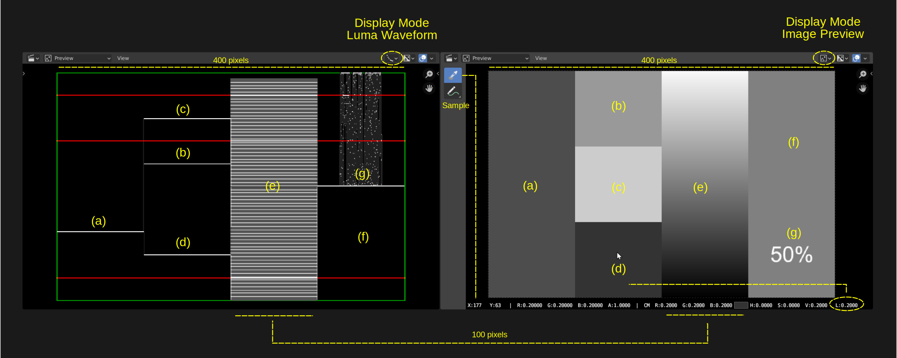
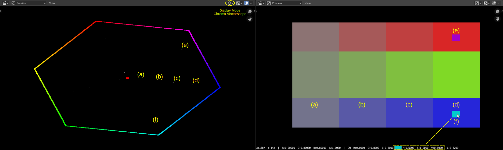
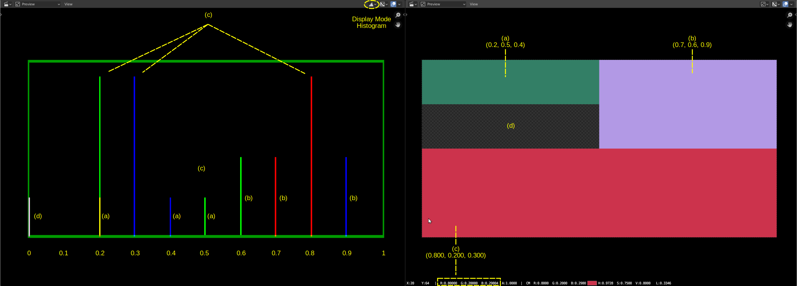

1.2.1. Header¶
図1: PreviewウィンドウのHeader¶
Type Selectorボタンは、SequencerのHeaderのボタンと同じです。メニューバーは、必要最低限の機能を備えた [View] メニューに限定されています。 [Show Overlay] ボタンは、表示系ボタングループの右端にあり、中央に[Pivot Point]ボタンがある。Type Selectorに関する一般的な情報については、Sequencer header を参照してください。
1.2.1.1. Viewメニュー¶
図2: PreviewウィンドウのViewメニュー¶
- Sidebar - Toolbar
詳細は Sequencer header を参照
- Preview During Transform
このオプションを無効にすると、左または右のストリップ ハンドルをドラッグするとストリップの長さが延長または短縮されますが、Preview 内の現在のフレームは変更されません。つまり、ドラッグ中にPreviewの画像は変化しません。ただし、このオプションを有効にすると、ストリップ ハンドルをドラッグすると、ストリップ ハンドルが指しているフレームがPreviewウィンドウに表示されます。現在のフレームは一時的に無効になります。これにより、非常に正確なトリミングが可能になります。
- Fit Preview in Window Home
プロジェクトのサイズに収まるようにPreviewウィンドウのサイズを変更します。特定のレンダリングイメージに応じて、高さまたは幅、またはその両方がプロジェクトの高さまたは幅と等しく設定されます。
- Zoom Shift-B
クリックとドラッグして矩形選択し、この矩形の範囲にズームします。選択した領域がウィンドウの中央に配置され、プレビューは Previewウィンドウ / 選択された矩形サイズ の倍率 でズームされます。通常、これはズームインですが、Previewウィンドウより大きい四角形の選択範囲をドラッグすることもできます (ウィンドウの外側から開始すると、ズームアウトになります)。
- Fractional Zoom
Preview (プロジェクト領域) のサイズを 1:8 から 8:1 までの段階で変更します (図 1 を参照)。 プロジェクトのサイズが 640 x 640 であるとします。 1:1 の分数ズーム (Numpad-1 ) により、プロジェクト領域のサイズが変更されます (図1: Preview領域)。そして、Previewウィンドウで正確に 640 x 640 ピクセルをカバーするようにします。 Previewウィンドウが非常に小さい場合、画像は境界線を越えて広がります。 1:2 (1 を 2 で割った) の分数ズームは、元の 640 x 640 が半分の 320 x 320 ピクセルに縮小されることを示します。 2:1 の分数ズームでは、プロジェクト領域が 2 倍になります。
- Zoom to Fit
[Zoom to Fit]コマンドは、Previewウィンドウ内に完全に収まるようにプレビューの最大の辺を調整します。たとえば、プレビューの最大の編は、Previewウィンドウの最大の辺と同じ長さになります。
- Ctrl-Spacebar
Ctrl-Spacebar キーを押すと、マウスカーソルの下のウィンドウが切り替わります。例えば。プレビューをセミフル表示にします。Headerとメニューは引き続き表示されます。一番上に [Back to Previous]ボタンがあります。もう一度 Ctrl-Spacebar を押すか、「Back to Previous」ボタンを押すと、ウィンドウが復元されます。このコマンドはメニューから呼び出すことができます: [View ] > [Area] > [Toggle Maximize Area]
- Alt-Ctrl-Spacebar
Alt-Ctrl-Spacebar キーを押すと、マウス カーソルの下にあるウィンドウが全体表示に切り替わります。利用可能な画面スペースはすべてPreview用に確保されます。ウィンドウを元に戻すには、もう一度 Alt-Ctrl-Spacebar 押す必要があります。他のキーやメニューは機能しません。他の最大化されたウィンドウのように、左上隅に小さなポップアップさえありません。メニューからこのコマンドを呼び出すことができます: [View] > [Area] > [Toogle FullScreen Area]。
このコマンドは、デュアル モニター セットアップを実行する場合にも役立ちますが、 最初にOSのウィンドウ最大表示化のショートカット(例: shift+ctrl+alt+space 1)を追加しておくと、[Window] > [New Window] を実行し、作成したウィンドウをセカンドモニターに移動した後に、 shift+ctrl+alt+space キーでOSのウィンドウ最大表示、および ctrl+alt+spaceキーでBlenderのヘッダーなしの全画面表示を行えます。
- Show Cache, Sequence Render Image, Sequence Render Animation, Export Subtitles
レンダリングについては、Video Editing > Render セクションを参照
字幕については Video Editing > Rendering > Postprocessing を参照
課題
それらのセクションへのリンクを追加する (subtitlesの記載がない)
- Toggle Sequencer/Preview Ctrl-Tab
エディターの表示タイプを Sequencer と Preview の間で切り替えます。
1.2.1.2. Pivot Point¶
{kind=link}
Pivot Point は主に、回転やスケールなどの操作で使用されます。これは、ストリップイメージを回転または拡大縮小する基準となる点を定義します。 PreviewのHeaderでこのセレクターを使用すると、Pivot Pointの位置を変更できます。
Pivot Pintは 3D Viewport でも広く使用されています。参照 Editors > 3D Viewport
- Bounding Box center
Bounding Boxは、選択範囲をできるだけしっかりと囲む長方形のボックスです。
- Median Point
Median Pointは、選択したストリップのすべての原点に最も近い点です。これは、選択したストリップでカバーされる領域の中点と考えることができます。
- 2D cursor
プレビュー内の特定の点を中心にストリップを回転させたい場合があります。その場合、(ツールバーを使用して) 2D Cursor を設定し、それに応じてピボット ポイントを変更できます。
- Individual origins
複数のストリップが選択されている場合、選択したすべてのストリップの中点などの代わりに、ストリップ自身の原点を中心に、回転または拡大縮小することができます。たとえば、顔のポートレート ストリップが 3 つある場合、おそらく各顔をそれぞれの原点を中心に回転させる必要があるでしょう。
1.2.1.3. Display Mode¶
[Display Mode] ボタンを使用すると、現在のフレームでレンダリングされたイメージを、Image Preview(default)、Luma Waveform、Chroma Vectorscope、または Histgram ビューのどちらで表示するかを選択できます。
- Image Preview
Image Preview モードでは、レンダリングされた動画がどのように見えるかを確認できます。これはデフォルトの動作モードです。
- Luma Waveform
Luma Waveformは、画像または動画の輝度(luminosity)または明るさ(brightness)をグラフで表現したものです。このツールの使用方法の詳細については、カラー グレーディングのセクションを参照してください。以下の例は、基本原理を説明するために非常に様式化されており、現実世界の画像を表すものではありません。
図4: Luma Waveform と Image preview¶
図 4 は 2 つの Preview ウィンドウを示しています。左側は表示モード Luma Waveform、右側はデフォルトの表示モードである Image Preview です。この画像はいくつかのグレースケール領域を含む 4 つの列で構成されています。最後の列にも白い文字「50%」が含まれています。
Luma Waveform の X 軸は画像の X 軸を表します。画像の幅が 400 ピクセルの場合、Luma Waveform も幅 400 ピクセルになります。Luma Waveform では画像の個々の形状 (顔など) を認識することはできませんが、この例では 4 つの列は明度が大きく異なるため、識別できます。Luma Waveformの Y 軸は、下部の 0 (黒) から上部の 1 (白) までの範囲の明るさを表します。0.1、0.7、0.9 にプリセット値 (赤線) があります。
画像の最初の列の RGB 値 (0.3、0.3、0.3) は 70% グレーです。これは (a) の小さな白い線で示されています。水平軸の特定の位置 X について、垂直軸のすべてのピクセルは同じ輝度値 0.3 を持ちます。これが、Luma Waveformの 最初の水平方向の100ピクセルの1本の小さな白い線の意味です。
2 番目の列には、レベル 0.2 (d)、0.6 (b)、および 0.8 (c) の 3 本の小さな白い線が含まれています。特定の位置 X (ピクセル 100 ～ 199 の範囲) については、画像内の 3 つの正方形に対応する 3 つの明度値のみが存在します。
画像の 3 列目は黒から白までのグラデーションです。したがって、300 ～ 399 の範囲内のすべての位置 X には、黒 (0) から白 (1) までの範囲の複数の明度値があり、結果として複数の白い線が生じます。
4 番目の列の背景は 50% グレーで、レベル 0.5 で 1 本の白い線が表示されます。明度 0.5 を超える「点の集まり」は、アンチエイリアス処理された白いテキスト (50%) によって発生します。一部の X 位置 (列の真中) には複数の明度値があります。背景からの 0.5 と、白いアンチエイリアス処理されたテキストからの値です。テキストが白で 50% の灰色の背景とマージされているため、これらの値はすべて 0.5 を超えています。
サンプル ツールを使用すると、画像内のすべてのピクセルの輝度値とその他の色の値を確認できます。サンプル ツールを選択すると、画像上のステータス バーにこの情報が表示されます。図4 では、領域 (d) をクリックしました。ステータス バーで、L 値: 0.2 を読み取ることができます。
- Chroma Vectorscope
Chroma Vectorscopeは、画像の色相(Hue)および彩度(Saturation) x 明るさ(Brightness)の値をグラフィカルに表現したものです。3 つのプライマ色 (赤、緑、青) と 3 つのセカンダリ色 (イエロー、シアン、マゼンタ)、およびそれらの間の色は、頂点に前述の色を持つ六角形として視覚化されます。六角形の中心 (赤い点) の彩度 x 明度の値は 0 です (一方または両方が 0 であるため、色相は黒と等しくなります)。境界線の値の彩度 x 明るさの値は 1 です。六角形内の各ドットは、同じ色相と彩度 x 明るさの値を持つピクセルまたはピクセルのグループを表します。たとえば、非常に薄暗い画像や彩度の低い画像は、中心近くの点のグループとして表示されます。非常に飽和した (青い) 空を持つ画像は、青い境界線の近くに点の束として表示されます。
図4: Chroma Vectorscope と Image Preview¶
図 4 には、14 の異なる色相と彩度 x 明度の値が含まれています。それぞれは小さな点で表されます。その特定の値を持つピクセルの数は重要ではありません。たとえば、小さな長方形 (e) と (f) は、大きな長方形 (a) と同様に 1 つの (小さな) ドットで表されます。
長方形 (a)、(b)、(c)、および (d) はすべて同じ (青っぽい) 色相を持ちますが、彩度 x 明るさの値が異なるため、六角形のその色相(blue)を指す線上に位置します。
- Histogram
ヒストグラムは、画像の赤、緑、青の成分の強度を視覚化するグラフです。ヒストグラムの X 軸の範囲は 0 から 1 で、これは表示色空間で許容される強度値です。Y 軸は量の尺度であり、この特定の赤、緑、または青の強度を持つピクセルがいくつあるかを表します。
図5: Histogram と Image preview
図 4 では、レンダリングされたイメージは 3 つの長方形で構成されています。
(a) 緑 RGB(0.2, 0.5, 0.4)：画像サイズの1/8
(b) 紫 RGB(0.7, 0.6, 0.9)：画像サイズの1/4
(c) 赤 RGB(0.8, 0.2, 0.3): 画像サイズの半分
つまり、RGB コンポーネントは 9 つありますが、そのうち 8 つだけが異なります (値 0.2 が 2 回出現します)。長方形 (c) にはイメージ内のすべてのピクセルの半分が含まれているため、ヒストグラム バーの高さは約 0.5 で、X 位置 0.2、0.3、および 0.8 に描画されます。長方形 (b) は (c) の半分のサイズであり、ヒストグラム バーも同様です。これらは位置 0.6、0.7、0.9 に描画されます。長方形 (a) には、長方形 (c) と共通の 1 つの RGB コンポーネント値があります。(a) の赤コンポーネントが緑コンポーネント (c) の上に描画され、位置 0.2 に黄色のバーが表示されます。
最後に、透明領域 (画像サイズの 1/8) があります。これは黒色の RGB (0,0,0) で表され、位置 0 に白いバー (緑の上に赤、青の上に赤) が表示されます。
サンプル ツール (デフォルト) を選択すると、いつでも RGB 値を確認できます。図 5 では、:kbd:`LMB-Click`で、赤い四角形の RBB 値が実際に (0.8, 0.2, 0.3) であることを確認できます。
1.2.1.4. Display Channels¶
次の中から選択できます。
- Color and Alpha
市松模様パターンの上に透明度のあるプレビュー イメージを表示します。
- Color
プレビュー画像の透明度を無視します(完全に透明な領域は黒になります)。
1.2.1.5. Show Gizmo¶
{kind=link}
[Show Gizmo] を使用すると、Previewウィンドウのズームと移動のギズモ 2 (手と虫眼鏡。詳細については Gizmos を参照) を表示できます。 また、アクティブツールの表示を有効にすることもできます。特定のツール（移動、拡大縮小、回転など）をアクティブ化時に、これらは選択したストリップの周囲に表示されるギズモです。
この設定はすべてのシーンにグローバルです。
1.2.1.6. Show Overlay¶
オーバーレイは、プレビュー領域の上に表示される追加情報で構成されます。[Show Overlay] ボタンを使用すると、Preview領域のすべてのオーバーレイをオフまたはオンに切り替えることができます。 [Overlays] ボタン (下向き矢印) を使用して、オーバーレイのタイプ (Frame Overlay, Safe Areas, Metadata および annotations) を選択できます。以下のオーバーレイが利用可能です。
利用可能なオプションの詳細については、 Section Frame Overlay を参照してください。
脚注